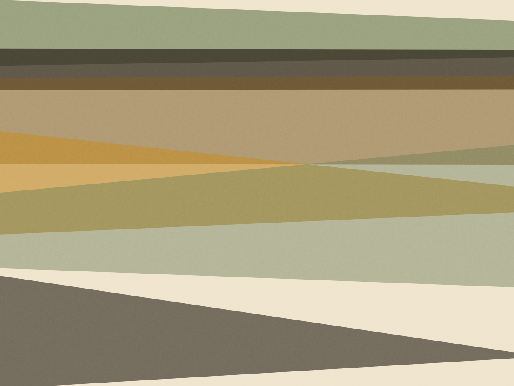
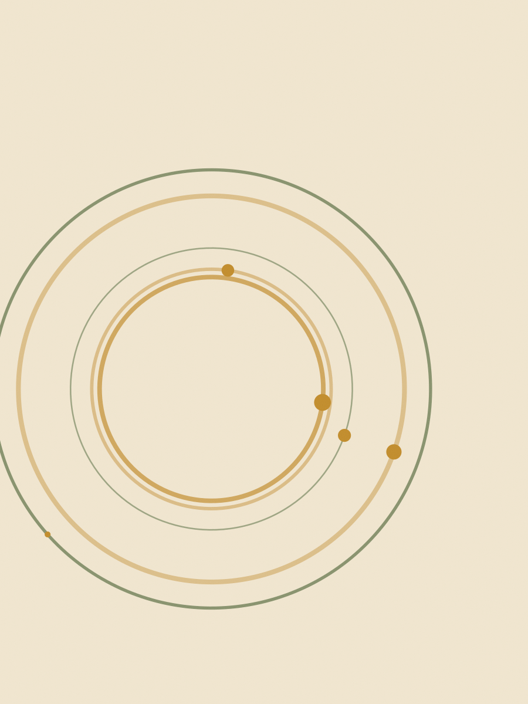
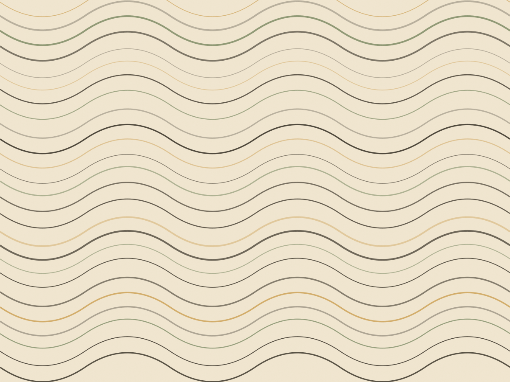
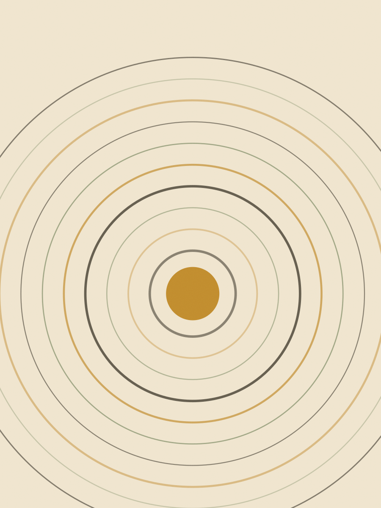

O mais pedido
Tagliatelle
Manteiga derretida com sálvia frita na hora, parmesão ralado e pimenta-do-reino moída na hora de servir.
250 g R$ 26 · 500 g R$ 46
3 min 45 s na água

Vila Madalena · massa fresca desde 2019
Oito formatos feitos na manhã do mesmo dia. Cada saco sai com o tempo exato de cozimento e o molho que combina — não com um folheto de sugestões.
A régua embaixo do nome mostra o tempo na água fervente. Massa fresca cozinha rápido e passa do ponto em quarenta segundos.
O mais pedido
Manteiga derretida com sálvia frita na hora, parmesão ralado e pimenta-do-reino moída na hora de servir.
250 g R$ 26 · 500 g R$ 46
3 min 45 s na água

Ragù de costela cozido seis horas, com a carne desfiada no próprio molho.
250 g R$ 28 · 500 g R$ 50
4 min na água
Tomate San Marzano cozido quarenta minutos com cebola e manjericão no fim.
250 g R$ 26 · 500 g R$ 46
3 min 30 s na água
Pesto de manjericão batido na pedra, com castanha-do-pará no lugar do pinhão.
250 g R$ 24 · 500 g R$ 42
4 min na água
Couve-flor dourada no azeite, alho laminado e pimenta calabresa. A concha segura o molho.
250 g R$ 27 · 500 g R$ 48
5 min na água
Manteiga com parmesão e noz-moscada. Pronto quando sobe à superfície, e não antes.
500 g R$ 32
2 min, até subir
Manteiga queimada, amaretti esfarelado e sálvia. Doze unidades por embalagem.
250 g · 12 un R$ 38
4 min na água
Bolonhesa de panela e molho branco. Seis folhas por camada, sem precisar pré-cozinhar.
500 g · 12 folhas R$ 30
6 min, ou direto ao forno
Encomenda de mais de 3 kg: dois dias de antecedência, retirada na loja. Não fazemos entrega.
Sêmola de grano duro, ovo caipira e nada de água na massa de ovo. O que dá liga é a gema, e é por isso que a receita pede oito por quilo.



Molho em pote de vidro, massa pesada na hora e o kit de domingo já com o parmesão dentro.
O pote de vidro volta: devolver na próxima compra dá R$ 3 de desconto por pote. Pagamento em Pix, débito ou dinheiro.
Massa recheada é feita duas vezes por semana, porque o recheio precisa esfriar antes de ir para a massa.
| Dia | Na bancada | Horário |
|---|---|---|
| Terça | tagliatelle, fettuccine, talharim integral | 10h às 19h |
| Quarta | os três acima e gnocchi | 10h às 19h |
| Quinta | mais orecchiette e ravioli de abóbora | 10h às 19h |
| Sexta | os oito formatos | 10h às 19h |
| Sábado | os oito formatos, até acabar | 9h às 15h |
| Domingo e segunda | fechado para produção | — |
Um litro de água para cada 100 g de massa. Panela larga, água fervendo de verdade.
Dez gramas de sal por litro, depois que a água levanta fervura.
Massa fresca não se lava depois de escorrer. O amido da superfície é o que segura o molho.
Termine o molho na panela, com uma concha da água do cozimento. Trinta segundos de fogo alto.
“Compro o ravioli na sexta e congelo metade. Domingo foi direto para a água fervente, quatro minutos, e a textura era a mesma de sexta.” Helena Braga, compra na loja toda sexta desde 2022
Loja de rua com a bancada à vista: dá para ver a massa sendo aberta enquanto você espera o saco ser pesado.
Rua Harmonia, 386 — Vila Madalena, São Paulo.
Meia porta verde, ao lado da padaria. Metrô Vila Madalena a 700 m, descendo pela Girassol.